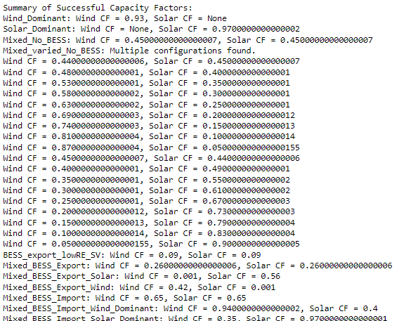
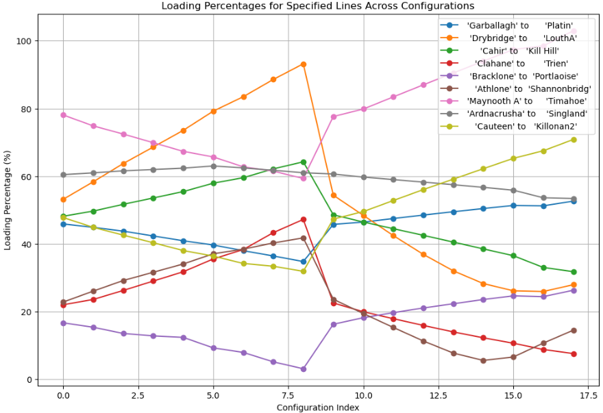
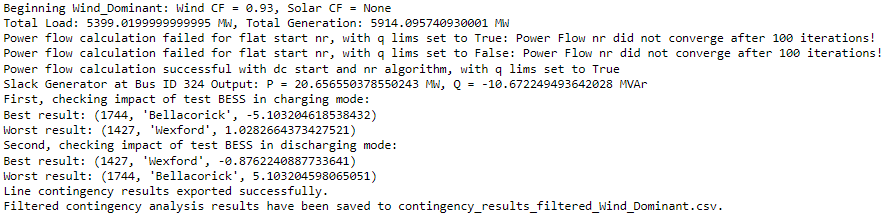

ROI Power System Analysis Tool - CLG
Objective is to accurately model the Irish transmission system and provide power system screening for existing and new wind, solar, and energy storage projects. This is done using public data and open source tools such as pandapower.
Below has been through several iterations and is not perfect, developed by Charlie Gerten in 2024 to model Summer 2031.
Generator list, network topology, and other features of the network should be reviewed regularly for accuracy. Does not include any portion of Northern Irish network.
The below is a sample of the actual tool available upon request by reaching out to the author.
Model used for powerflow analysis, imports existing network from pickle, adjusts network based on line, transformer, generator, load, and reactive power equipment data. Based on the year 2031 from Eirgrid’s TYTFS. Only models ROI, does not model any NI network. Outputs line loading and bus results in csv files in “Results” folder. Various plots are also provided for a visual representation of the load flow, worst case contingency and test energy storage net impact. Energy storage net impact is done using DCOPF and measures the sum of loading change before and after implementing the energy storage generator in an intact system.
Determining optimal system wind and solar capacity factors to obtain convergence
In order to build cases for screening, it’s important to first determine what the maximum tollerable wind and solar capacity factors are that will still allow each case to solve and converge properly. The goal being to reduce the amount of power that the slack bus generator needs to provide.

The purpose of the Mixed_varied_No_BESS is to create sub-cases in order to dig deeper into comparing which circuits and transformers experience the largest change in loading when shifting between a mixed dispatch to a wind or solar dominant dispatch. Below is a sample plot comparing various circuits starting with a mixed dispatch, shifting first toward wind dominant, then resetting and shifting toward a solar dominant dispatch:

Detailed intact powerflow, contingency and BESS nodal results

The script will automatically take each case and dispatch from the previous cell in order to solve and display results. Users can determine which stations they want included and look within the “Results” folder for comprehensive bus, line, and transformer intact and contingency results.
Various power flow calculation methods are attempted each time, although typically success is reached by utilizing Newton Raphson initialized in a DC manner with Q limits on each generator enforced.
The slack generator in this model is Turlogh Hill with each of the four individual generators combined into a single slack generator. If at all possible, the generation level of this slack bus generator should be minimized as it is typically only used for minor reserve balancing.
After the Slack Generator output, there are best and worst results for charging and discharging nodal analysis done with DCOPF. This portion of the script places a sample 1 MW generator at each node, solves the model and notes total net change in line/transformer loading in an intact system. Afterwards it provides the best and worst results sorted by smallest to largest as the point is to find nodes where a generator has a net negative impact to line loading. It first completes this with the generator set to “charge” as in negative power production, then moves to “discharge”. This is done using DCOPF in order to complete this quickly. While described as the impact of test BESS, this can be utilized to compare various nodes for which are better suited for additional generation or additional load in a lightweight initial screening view. It should be noted that the “charging” and “discharging” results should be almost mirrored in most cases.
Additionally, because it measures the impact in a way that compares net loading percentage before and after connecting the test generator, this tends to become biased toward nodes that are closest to generation nodes or remotely connected nodes. For example, Sorne Hill and Letterkenny tend to be the best result in test BESS charging cases for wind dominant dispatches as they contain fairly isolated wind generators.
Detailed intact powerflow, contingency and BESS nodal results

For each successful case, a network diagram is created to display the pwoer flow results. Plotly is used to display these results from PandaPower. This sample shows output from a wind dominant dispatch with BESS units set to zero in the Summer Peak of 2031.
By hovering over the midpoint of each line, the user can determine the line name, intact loading percentage, real and reactive power, worst case loading percentage and the element which causes that worst case overload. Each line is color coded based on intact line loading, turning more red-tinted as the loading increases and blue as the line loading decreases. In the above example, Cahir-Doon experiences a line loading of roughly 100%. Arrows on each line display the real power flow direction. By hovering over each node, results from the test BESS net impact are found, allowing the user to quickly compare which nodes would have a better net loading impact by having a charging or discharging generator connected at the node.
Further options and additional functionality
Additional functionality includes but is not limited to:
Nodal hosting capacity analysis.
Generator connection method option comparison.
Network reinforcement sensitivities.
Further options under development:
Expanding existing nodal BESS net impact functionality such that the net impact is measured by worst case contingency.
Expanding applicable cases such that a subset of a full year 8760 ecnomic dispatch can be run in order to imitate Eirgrid constraint study which utilizes PLEXOS.
Shift factor analysis
Comprehensive plotting and geographic overlay.
Integration with ChatGPT or Llama
Advantages and Disadvantages:
Significantly cheaper than TARA or PSSE.
More easily adaptable to various python libraries and packages.
Minimal technical or power system knowledge required.
While this tool is not perfect, it provides a quick, light-weight screening for HV transmission nodes in the Irish system. The background data feeding into this tool is reviewed, aggregated, and compared against the latest system information provided publically by Eirgrid and ESB.